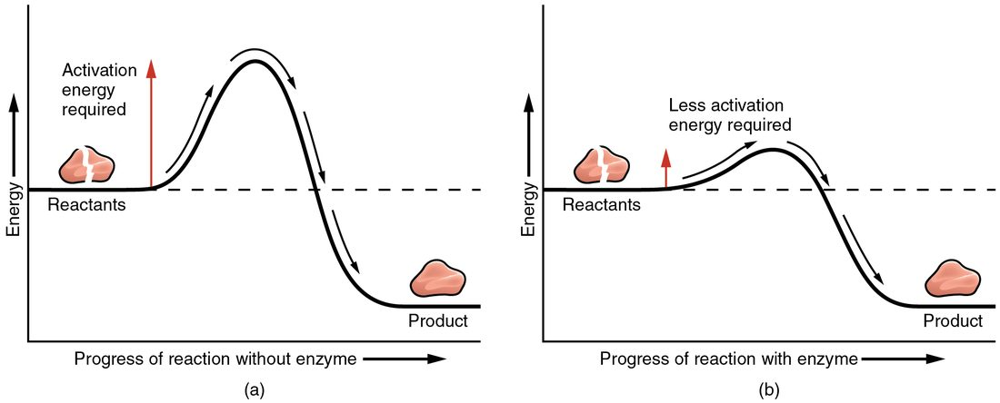
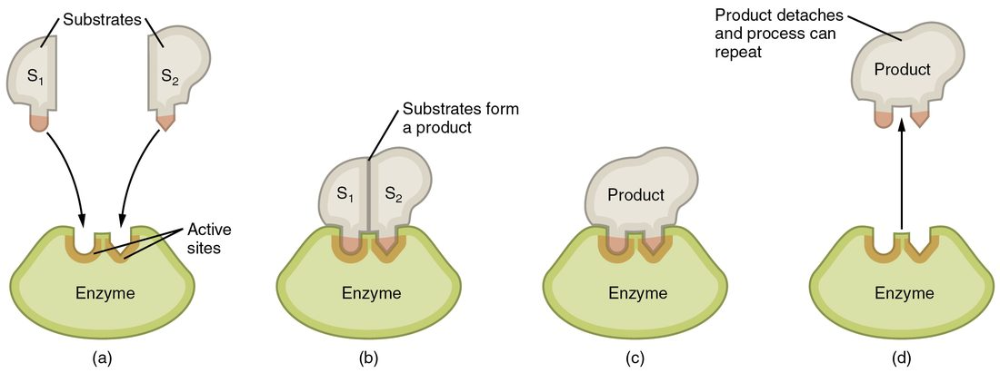

Every second, your cells run thousands of different chemical reactions. Left alone, most of them would run far too slowly to keep you alive. This page covers the basics of energy and metabolism, then shows how enzymes speed reactions by lowering their activation energy, what changes how fast an enzyme works, and how your cells move energy from one reaction to another using ATP and electron carriers.
Energy: the capacity to do work
Hold a book above the floor. While you hold it still, nothing happens, but the book has energy stored in its position: let go and it falls. As it falls, that stored energy becomes energy of motion. Those are the two basic forms of energy.
- Energy is the capacity to do work: to move something, build something or change something.
- Potential energy (potent- = able, powerful) is stored energy. It comes from position or from structure: the raised book, a stretched spring, a crowd of ions held on one side of a barrier.
- Kinetic energy (kinet- = motion, -ic = relating to) is the energy of motion: the falling book, blood moving through an artery, molecules jostling in a solution. Heat is the kinetic energy of randomly moving atoms and molecules. The faster they move, the higher the temperature.
- Chemical energy is potential energy stored in the arrangement of atoms and the bonds between them. Glucose, fats and ATP all hold chemical energy.
Energy is never created or destroyed; it only changes form. Your body turns the chemical energy of food into the chemical energy of ATP, then into the kinetic energy of moving muscle. At every conversion, some energy leaves as heat. That heat is why you stay warm: it is a by-product of your reactions, not a separate process.
Reactions that release energy and reactions that need it
Burn a spoonful of sugar in a flame and it releases a burst of heat and light. Your cells break down the same sugar in many small steps, but the total energy released from start to finish is the same. The products (carbon dioxide and water) hold less chemical energy than the reactants (glucose and oxygen), and the difference is released.
Chemists sort reactions by where the energy goes:
- An exergonic reaction (ex- = out, erg- = work) releases energy. Its products hold less energy than its reactants.
- An endergonic reaction (end- = within) takes in energy. Its products hold more energy than its reactants, so energy has to be supplied from somewhere else.
| Exergonic reaction | Endergonic reaction | |
|---|---|---|
| Energy in the products compared with the reactants | Less | More |
| Energy overall | Released | Taken in |
| Can it proceed without an outside energy source? | Yes, once it gets past its activation energy | No; it has to be paired with an energy-releasing reaction |
| Body example | Breaking glucose down to carbon dioxide and water | Joining amino acids into a protein |
"Releases energy" does not mean "happens quickly". A reaction can release a great deal of energy and still barely run at body temperature. You will see why in the section on activation energy.
Metabolism: building up and breaking down
Between meals, your liver breaks stored glycogen into glucose. After a meal, it does the reverse and links glucose into glycogen. Both are part of your metabolism.
Metabolism (metabol- = change, -ism = process) is the sum of all the chemical reactions in your body. It has two halves.
- Catabolism (cata- = down) breaks large molecules into smaller ones. Catabolic reactions include breaking glycogen into glucose, proteins into amino acids, and glucose into carbon dioxide and water. They are usually exergonic.
- Anabolism (ana- = up) builds large molecules from smaller ones. Anabolic reactions include building proteins from amino acids and glycogen from glucose. They are usually endergonic.
| Catabolism | Anabolism | |
|---|---|---|
| What happens to molecules | Large molecules are broken into smaller ones | Small molecules are joined into larger ones |
| Energy | Usually released (exergonic) | Usually taken in (endergonic) |
| Typical reaction type | Decomposition, often hydrolysis | Synthesis, often dehydration synthesis |
| Body example | Glycogen broken into glucose between meals | Glucose linked into glycogen after a meal |
The two halves are linked. Catabolic reactions release energy, and your cells capture part of it by making ATP. ATP then supplies the energy that anabolic reactions need. The rest of the released energy becomes heat.
ATP: the energy currency
You met ATP (adenosine triphosphate) in the topic on biomolecules: adenine, the sugar ribose and a chain of three phosphate groups. It carries energy from the reactions that release it to the reactions that need it, much as money carries value from your job to the things you buy.
ATP hydrolysis
ATP hydrolysis (hydro- = water, -lysis = splitting) uses a water molecule to split off the end phosphate group:
ATP + H2O → ADP + phosphate + energy
This reaction is exergonic. The energy does not come from the phosphate bond itself; breaking any bond takes energy. It comes from the difference between the reactants and the products. The three negatively charged phosphate groups in ATP repel each other, so ATP is a strained, high-energy molecule. ADP and a free phosphate, each surrounded by water, form a more stable, lower-energy arrangement. The drop in energy from ATP to the products is what is released.
An ATPase (-ase = enzyme) is any enzyme that hydrolyzes ATP. Many proteins that do work are ATPases, including the proteins that pump ions across the boundary of your cells and the motor proteins that make muscle contract.
Phosphorylation
Phosphorylation is attaching a phosphate group to a molecule. Often ATP does not simply release its end phosphate; an enzyme hands it straight to another molecule. When glucose enters a cell, for example, an enzyme moves a phosphate from ATP onto the glucose. The phosphorylated molecule has more energy and a different shape or charge, and that change is what lets it react, move or switch on. Adding a phosphate to a protein can change the protein's shape and turn its activity on or off.
Recycling ATP
Your cells hold only a small store of ATP at any moment. Catabolic reactions keep rebuilding it from ADP and phosphate, which is endergonic. The turnover is huge: you recycle roughly your own body weight in ATP every day. You will see how cells rebuild ATP in the topic "How cells make ATP".
Reaction rates, reversibility and equilibrium
In the topic on acids and bases, you saw carbonic acid split into bicarbonate and a hydrogen ion, and you saw bicarbonate take up a hydrogen ion to re-form carbonic acid. The same reaction runs in both directions:
carbonic acid ⇌ bicarbonate + H+
Reversible reactions
A reversible reaction is one whose products can react with each other to re-form the reactants. The double arrow (⇌) shows this. Many reactions in your body are reversible.
Reaction rate
The reaction rate is how fast reactants turn into products: for example, how many molecules react each second. Three things raise it.
- More reactant. Reactions happen when particles collide. A higher concentration means more collisions each second.
- Higher temperature. Faster-moving particles collide more often, and more of their collisions carry enough energy to react.
- A catalyst. A catalyst (cata- = down, -lyst = loosen) is a substance that speeds a reaction and comes out of it unchanged, ready to be used again. Enzymes are your body's catalysts.
Chemical equilibrium
Mix reactants for a reversible reaction and at first the forward reaction runs fast. As products build up, the reverse reaction speeds up. Eventually the two rates are equal. This is chemical equilibrium (equi- = equal, libra = balance): the forward and reverse reactions keep running at the same rate, so the amounts of reactants and products stop changing. The amounts do not have to be equal; only the two rates are.
Change the amounts and the balance shifts. Add reactant, and more product forms until a new balance is reached. Remove product, and the reaction runs forward to replace it. Your blood shows this every time you breathe out. Carbon dioxide combines with water to form carbonic acid, which splits into bicarbonate and H+:
carbon dioxide + water ⇌ carbonic acid ⇌ bicarbonate + H+
Breathe faster and you remove carbon dioxide from the left-hand end. The reactions run leftward to replace it, H+ is used up, and blood pH rises.
Exchange reactions
You already know synthesis reactions (joining) and decomposition reactions (splitting). In an exchange reaction, parts of two molecules trade places: AB + CD → AD + CB. Bonds break and new bonds form in the same reaction. The phosphorylation of glucose is one: ATP + glucose → ADP + glucose phosphate. The phosphate group has moved from one molecule to the other.
Activation energy: why reactions need a push
Glucose reacting with oxygen is strongly exergonic, yet a bowl of sugar can sit in the air for years without changing. The reaction needs a push to get started. Hold a flame to the sugar and it burns.
That push is the activation energy: the energy the reactants must gain before their bonds can rearrange. On the way from reactants to products, the atoms pass through an unstable, in-between arrangement called the transition state. Reaching it takes energy, even when the products end up lower in energy than the reactants. Look at the left panel of Figure 1: the reaction has to climb a hill before it can roll downhill.

At any moment, only a small share of molecules collide with enough energy to get over the hill. Heating would raise that share, but heating your tissues enough to speed reactions would also unfold your proteins. Your body lowers the hill instead.
Enzymes: your biological catalysts
An enzyme (en- = in, zyme = leaven, as in yeast) is a biological catalyst. Almost all enzymes are proteins. The molecule an enzyme acts on is its substrate (sub- = under, stratum = layer: the thing acted on).
The active site
The active site is a small pocket or groove on the enzyme where the substrate binds. Its shape and chemistry come from how the protein chain is folded, so the active site depends on the protein's shape. Because only substrates with the right shape and charges fit well, each enzyme acts on one substrate or a small family of similar ones. Enzyme names usually end in -ase and often name the substrate or the job: alcohol dehydrogenase removes hydrogen from alcohols.
How an enzyme works
Follow the steps in Figure 2.

- The substrate collides with the enzyme and fits into the active site.
- Binding makes the enzyme change shape slightly, closing more snugly around the substrate. This is called induced fit.
- The active site lowers the activation energy. It holds two substrates close together in the right orientation, strains the bonds that must break, and places charged or polar amino acids where they can donate or accept H+.
- The products form. They no longer fit the active site well, so they are released.
- The enzyme is unchanged and binds another substrate.
Because the enzyme is not used up, a few enzyme molecules can handle a great many substrate molecules. Catalase, an enzyme that breaks toxic hydrogen peroxide into water and oxygen, can process millions of molecules per second.
What enzymes do not do
- They do not supply energy. They lower the hill; they do not change the height of the starting point or the end point.
- They do not turn an endergonic reaction into an exergonic one. An energy-requiring reaction still needs energy, usually from ATP.
- They do not change where equilibrium lies. An enzyme speeds the forward and reverse reactions by the same factor, so equilibrium is reached sooner, at the same balance point.
What changes enzyme activity
An enzyme's rate depends on its shape, on how much substrate and enzyme are present, on its helpers, and on molecules that block it. Figure 3 shows the first two factors.
Temperature
Warming speeds an enzyme reaction at first, because molecules move faster and collide more. Most human enzymes work best near 37 °C. Above that, the extra motion starts to break the hydrogen bonds that hold the protein's shape. The active site loses its shape, activity falls steeply, and the loss is often permanent: this is denaturation. A sustained body temperature above about 41 to 42 °C is dangerous for this reason. Cooling works differently: it slows enzymes without unfolding them, and they speed up again when warmed.
pH
Each enzyme also has an optimum pH. Extra or missing H+ changes the charges on amino acids in and around the active site. That changes how the substrate binds and can change the protein's shape. An enzyme that works in your stomach has an optimum near pH 2. Most enzymes in your blood and cells work best near neutral, which is one reason normal blood pH (7.35 to 7.45) matters so much.
How much substrate and how much enzyme
With a fixed amount of enzyme, adding substrate raises the rate, because active sites meet substrate more often. The rise slows and then levels off. At that point every active site is busy almost all the time, so the enzyme is working at its maximum rate, and extra substrate cannot speed it up. The only way to go faster then is more enzyme. Your cells control many reactions by making more of an enzyme or by breaking it down.
Cofactors and coenzymes
Many enzymes cannot work alone. A cofactor (co- = together) is a non-protein helper that an enzyme needs. Many cofactors are metal ions, such as magnesium (Mg2+), iron or copper, that help hold the substrate or pass electrons. A coenzyme is an organic (carbon-based) cofactor. Many coenzymes are made from vitamins, and many carry atoms or electrons from one reaction to the next. NAD+ is made from the vitamin niacin, and FAD from the vitamin riboflavin. When a vitamin is missing, every enzyme that depends on its coenzyme slows.
Inhibitors
An inhibitor is a molecule that slows an enzyme.
- A competitive inhibitor resembles the substrate and binds the active site, so substrate cannot bind. Adding more substrate outcompetes it.
- A noncompetitive inhibitor binds somewhere else on the enzyme and changes its shape, so the active site works poorly however much substrate is present.
Many drugs work this way. Fomepizole, the antidote for methanol poisoning, is a competitive inhibitor of alcohol dehydrogenase. Your cells also switch enzymes on and off by phosphorylating them.
Oxidation and reduction
In your liver, alcohol dehydrogenase removes two hydrogen atoms from methanol and turns it into formaldehyde. The enzyme does not simply throw those hydrogens away. It hands their electrons to a coenzyme called NAD+. Methanol has lost electrons; NAD+ has gained them.
- Oxidation is the loss of electrons. In body chemistry, electrons often leave together with hydrogen atoms, so losing hydrogen usually means being oxidized. The name comes from oxygen, a strong electron grabber, but no oxygen has to be involved.
- Reduction is the gain of electrons. The word is old (re- = back, duc- = lead): chemists first used it for turning a metal ore back into pure metal. An easy way to remember it: adding negative electrons reduces a molecule's charge.
A memory aid: OIL RIG, "oxidation is loss, reduction is gain". The two happen together. Electrons that leave one molecule have to go to another, so every oxidation-reduction reaction (redox reaction for short) oxidizes one molecule and reduces another. Energy travels with the electrons: the molecule that is oxidized usually loses energy, and the molecule that is reduced gains it.
Electron carriers
An electron carrier is a coenzyme that picks up electrons in one reaction and delivers them in another. Your cells use two main ones.
- NAD+ (nicotinamide adenine dinucleotide) accepts two electrons and one H+ to become NADH. A second H+ from the same reaction is released into the surrounding water.
- FAD (flavin adenine dinucleotide) accepts two electrons and two H+ to become reduced FAD.
When your cells break down glucose, they oxidize it step by step. Much of the energy in glucose leaves in electrons carried by NADH and reduced FAD, and in the end those electrons are passed to oxygen, which is reduced to water. The topic "How cells make ATP" shows how that electron energy is used to make most of your ATP.
| Oxidation | Reduction | |
|---|---|---|
| Electrons | Lost | Gained |
| Hydrogen atoms (in body chemistry) | Often lost | Often gained |
| Energy of the molecule | Usually falls | Usually rises |
| Example with NAD+ and NADH | NADH becomes NAD+ | NAD+ becomes NADH |
Putting it together: methanol poisoning
Methanol itself is only mildly toxic. The harm comes from what your enzymes make from it. Alcohol dehydrogenase oxidizes methanol to formaldehyde, a second enzyme oxidizes formaldehyde to formic acid, and formic acid releases H+ that the blood's buffers cannot fully absorb. Blood pH falls (acidosis), and the acid damages the cells that carry signals from the eye, which can cause blindness.
Fomepizole fits the active site of alcohol dehydrogenase and blocks it. With the first step blocked, methanol is not converted to formic acid, and the unchanged methanol is removed slowly from the body. The earlier the block is in place, the less acid forms.